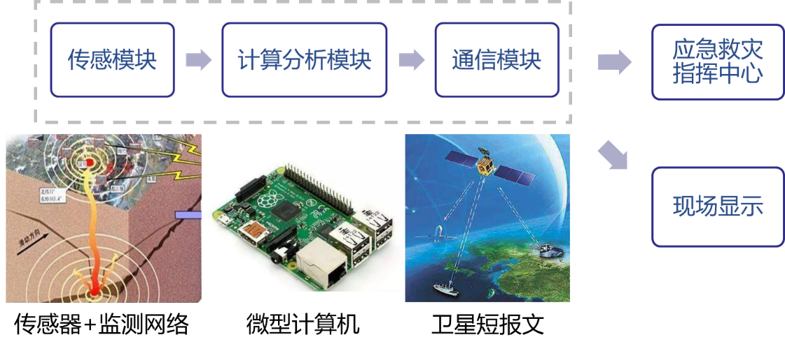

发明专利丨基于循环神经网络的地震破坏力预测装置及方法

专利链接：
http://epub.cnipa.gov.cn/certifdesc.action?strWhere=CN110780347B
0
太长不看版
针对现有应急震害评估方法难以兼顾准确性与实时性的问题，我们提出了基于神经网络的应急震害评估方法；基于相关研究，申请并获得了“基于神经网络的应急震害预测装置”发明专利授权。该装置制造简单、成本低廉、效率很高；测试结果表明，该方法与装置可以高效、合理的预测震害结果，并实时更新与传递信息，具有良好的应用前景。
1
地震灾害是一种非常严重的自然灾害。在震后，第一时间开展应急救援，对于减轻受灾地区的人员伤亡和损失至关重要；绝大部分受困人员都是在震后的“黄金救援时间”内救出的。而要及时、合理的调度救援力量与物资支援灾区，就必须要快速、准确的获取灾区的震害情况。
但由于地震灾害的不确定性和灾害现场的高度复杂性，获取灾区震害情况一向是一个巨大的难题。目前，既有的地震台网等可以快速评估地震的基本参数（例如震源位置与深度、震级等）。但众所周知，地震参数（震级等）难以直接用于评估本次地震的具体破坏结果，发震震源附近也不见得是震害最为严重的区域，断层扩展、场地、震中距、结构等太多其他因素都可以影响最终的破坏结果。例如2008年汶川地震震源（汶川）距离震害最严重的北川老县城超过100公里，以及2017年九寨沟地震初步评估中经验模型显著高估地震破坏力。

2008年汶川8.0级地震中，震源（汶川）与震害最严重的地区（北川）之间距离超过100公里
当然，既有台站也可以记录地震动的加速度时程数据。据此，研究人员提出了一系列基于地震动（或其部分强度指标）的应急震害评估方法，旨在快速准确的获取地震动破坏结果。典型方法包括易损性方法、能力-需求谱法和非线性时程分析方法。不过，上述方法都存在一些不足之处。易损性分析与能力需求谱法对地震动强度指标和结构模型进行了较多简化，因而效率较高但准确性不足；时程分析法较为复杂，准确度较高，但需要常备高性能计算设备且存在效率问题。总之，既有方法难以很好地平衡应急震害预测的准确性与实时性。

几种震害评估方法的优缺点比较
2
方法原理与装置设计
课题组研究提出了基于循环神经网络的地震动破坏力预测方法（论文：如何将地震破坏力评估加速1500倍？）。该方法可以概括如下图。其核心思想是震前通过开源地震动数据库（PEER NGA、K-NET等）获取大量历史地震动，并通过RED-ACT系统（论文：城市抗震弹塑性分析方法开源框架）计算得到震害结果，据此训练神经网络，获取能准确预测震害的神经网络模型并进行必要的验证；应急时，利用强震台网获取实测地震动，基于所获取的神经网络模型直接开展预测，快速评估目标区域的地震动破坏力。该方法可以很好地平衡准确性与实时性，并可以进行进一步的改进，引入卷积神经网络（CNN）与小波时频图（论文：卷积神经网络 + 小波时频图，基于地震动时频域特征的震害评估新方法）、多元地震动强度指标等（论文：基于机器学习方法的多元地震动强度指标比选与实时震害预测）。

应急震害评估方法基本原理
基于上述研究工作，我们申请并获得了“基于神经网络的应急震害预测装置”发明专利授权。该装置的基本架构如下图所示，包含3个核心模块：
（1）传感模块：通过内置加速度计，快速获取装置所在地的实际地震动记录，作为应急震害预测的基础；若链接到了既有地震动监测网络上，该模块也可以省略（直接以监测网络的记录作为输入）；
（2）计算分析模块：包括对地震动进行预处理的自动化程序（例如裁剪、小波变换等）、预加载的神经网络模型；该模块具有一定的计算分析和存储能力，可以对地震动进行简单预处理并输入预加载的模型，完成对震害结果的快速评估；
（3）通信模块：通过通信技术（例如北斗卫星短报文技术），将震害结果快速传递到应急救灾指挥中心或者其他预定地点，服务于应急救援调度；如有需要，还可以增设现场显示模块，对上述信息进行实时、动态展示。

装置基本架构示意图
该装置具有自主知识产权，同时具备以下优点：
构造简单：仅分为3个模块，且相应的硬件设备都可以较为容易的购置；
成本低廉：加速度计、计算和存储能力要求不高的计算分析模块以及简单的通信模块，成本都很低；
预测效率很高：可以在1s内完成一个小区域的震害预测，并可以随着地震动的传播实时更新。

用于测试的地震动时程记录

震害预测结果
基于某地震动的测试结果如上图所示，其预测对象为典型地区（清华大学校园的619栋建筑组成的建筑群）的震害等级。Extensive代表严重破坏及以上建筑比例，而Moderate代表中等破坏及以上建筑比例（分别服务于人员伤亡应急评估 和 转移安置人员规模应急评估）。从上图可以看出：
（1）震害预测结果快速提升段与地震动加速度峰值段吻合（幅值较大的地震动区段造成的破坏严重，微弱区段不容易造成破坏）；
（2）严重破坏建筑比例提升晚于中等破坏建筑比例（震害状态必然按顺序出现，因此严重破坏出现必定晚于中等破坏）；
（3）最终达到真实破坏状态并保持稳定（真实破坏状态基于非线性时程分析确定，60s后破坏状态均没有再改变）。
3
总结
上述结果表明，本研究提出的方法能够准确评估震害情况，并实时更新，满足应急震害预测的需求。所研发的装置构造简单明确、成本可控，并具有自主知识产权，具有良好的推广应用前景。
4
本课题组相关专利
[1] 陆新征, 廖文杰, 徐永嘉, 基于卷积神经网络振动识别的线性二次型控制改进方法，发明专利，专利号：ZL 202010169860.3
[2] 陆新征，徐永嘉，程庆乐，基于循环神经网络的地震破坏力预测装置及方法，发明专利，专利号：ZL 201911154874.1
[3] 陆新征，许镇，曾翔，杨哲飚，一种城市建筑地震次生火灾模拟方法，发明专利，专利号：ZL 201810255576.0
[4] 陆新征，曾翔，许镇，田源，一种基于震后航拍影像的近实时震损评估方法，发明专利，专利号：ZL 201810119671.8
联络邮箱：
--End--
相关研究

新论文：抗震&防连续倒塌：一种新型构造措施
长按识别二维码，关注我们的科研动态